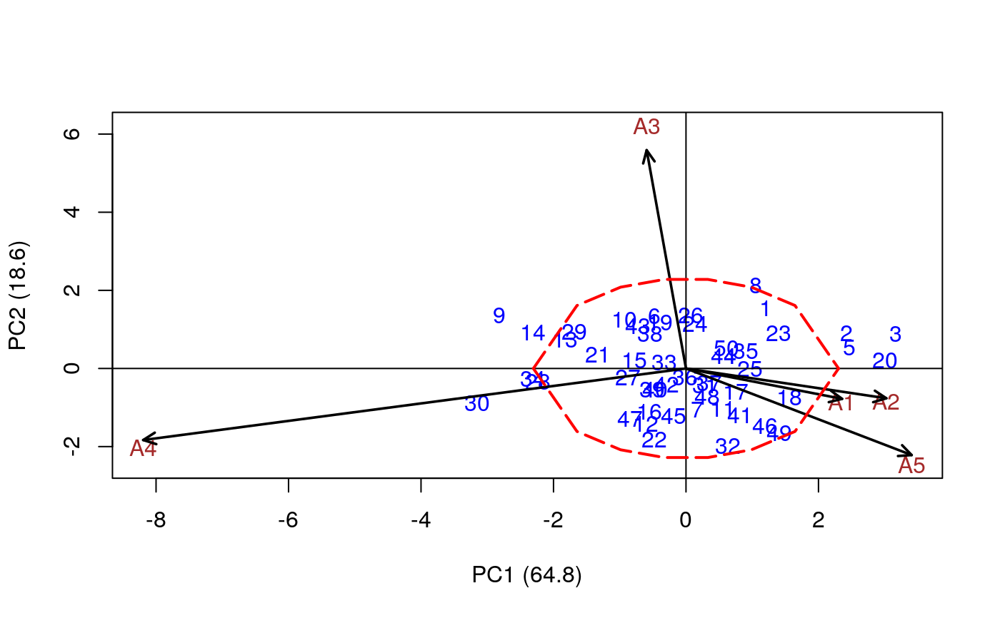

Draws a polygon or a circumference around the center of the Biplot with a proportional radio at the longest distance of the genotype.
First, it is necessary to execute the AMMI function. It is only valid for the BIPLOT function but not for the TRIPLOT one.
AMMI.contour(model, distance, shape, ...)
| model | Object |
|---|---|
| distance | Circumference radius >0 and <=1 |
| shape | Numerical, relating to the shape of the polygon outline. |
| ... | Parameters corresponding to the R lines function |
Genotypes Genotypes within and outside the area.
distance Distance from genotype to origin (0,0)
Complement graphics AMMI
library(agricolae) # see AMMI. data(sinRepAmmi) Environment <- sinRepAmmi$ENV Genotype <- sinRepAmmi$GEN Yield <- sinRepAmmi$YLD REP <- 3 MSerror <- 93.24224 model<-AMMI(Environment, Genotype, REP, Yield, MSerror) plot(model)AMMI.contour(model,distance=0.7,shape=8,col="red",lwd=2,lty=5)#> #> Limit, radio: 2.303589 #> Genotype in: 41 #> Genotype out: 9 #>#> $`GENOTYPE IN` #> [1] "1" "10" "11" "12" "13" "15" "16" "17" "18" "19" "21" "22" "23" "24" "25" #> [16] "26" "27" "28" "29" "31" "32" "33" "35" "36" "37" "38" "39" "4" "40" "41" #> [31] "42" "43" "44" "45" "46" "47" "48" "49" "50" "6" "7" #> #> $`GENOTYPE OUT` #> [1] "14" "2" "20" "3" "30" "34" "5" "8" "9" #> #> $Distance #> distance #> 1 1.9514760 #> 10 1.5615217 #> 11 1.1769189 #> 12 1.5375472 #> 13 1.9695047 #> 14 2.4885468 #> 15 0.8082461 #> 16 1.2355245 #> 17 0.9642868 #> 18 1.7277735 #> 19 1.2444535 #> 2 2.5864575 #> 20 3.0107101 #> 21 1.3768422 #> 22 1.8787002 #> 23 1.6592957 #> 24 1.1502888 #> 25 0.9657643 #> 26 1.3664762 #> 27 0.9072038 #> 28 2.2600489 #> 29 1.9305338 #> 3 3.2908418 #> 30 3.2759033 #> 31 0.5189824 #> 32 2.0794344 #> 33 0.3602233 #> 34 2.3231291 #> 35 1.0042183 #> 36 0.2286455 #> 37 0.5177541 #> 38 1.0371016 #> 39 0.7436472 #> 4 0.7355002 #> 40 0.7130276 #> 41 1.4534899 #> 42 0.5117842 #> 43 1.3041322 #> 44 0.6452761 #> 45 1.2233650 #> 46 1.8981620 #> 47 1.5444075 #> 48 0.7955642 #> 49 2.1712610 #> 5 2.5288390 #> 50 0.8002928 #> 6 1.4282289 #> 7 1.0677117 #> 8 2.3695614 #> 9 3.1242502 #>AMMI.contour <- function(model,distance,shape,...){ UseMethod("AMMI.contour") } #' @export #' @rdname AMMI.contour